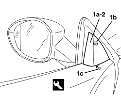

7005E12 CORNER COVER FOR ONE FRONT SIDE DOOR, LH OR RH - R.R.
- Path
- Procedures > 70 FITTINGS > 7005 PASSENGER COMPARTMENT FRONT SIDE DOORS > 7005E FRONT DOOR TRIM > 7005E12 CORNER COVER FOR ONE FRONT SIDE DOOR, LH OR RH - R.R.
- Kind
- repair procedure (removal / refitting; the operation number is the code)
- Applies to
- all engines; all production periods
- Interactive page
- https://sloeber94.github.io/elrnDB-aBrrSpdr/en/#/946002516
Applies to: all engines; all production periods
 Removing
Removing
 Refitting
Refitting1. Using the special tool, move the cover (1a) releasing the inner retainer (1b), then release the lower retainer (1c).
Tool | Description | Function | Validity |
|---|---|---|---|
1823014000 | Knife | Retainer removal |

Applies to: all engines; all production periods
Refitting
Removing- Check that the cover is not damaged.
- Place the cover in position and attach the lower retainer and then the inner retainer.
Topics that link to this page (29)
- 5505A42 CONTROL UNIT (DIGITAL NETWORK NODE) IN DRIVER'S DOOR - R.R.
- 5505A46 CONTROL UNIT (DIGITAL NETWORK NODE) IN PASSENGER SIDE DOOR - R.R.
- 5505B11 FRONT DOOR WIRING (ONE) LEFT OR RIGHT - R.R
- 5570T90 FRONT SPEAKER (ONE), LEFT OR RIGHT - R.R
- 5580E18 ANTI-THEFT DEVICE W/L - R+R FOLLOWING ELECTRICAL WIRING CHECK
- 5580E50 ANTITHEFT DEVICE VOLUMETRIC SENSOR R R FOLLOWING ELECTRICAL CIRCUIT CHECK
- 7005A05 FRONT SIDE DOOR WATER GUARD PROTECTION - R.R. OR POSITION
- 7005A50 FRONT SIDE DOOR WEATHERSTRIP - R.R.
- 7005C11 FRONT SIDE DOOR EXTERIOR HANDLE - R.R
- 7005C41 FRONT SIDE DOOR EXTERIOR HANDLE LOCK CONNECTION LINK - R.R
- 7005C53 FRONT SIDE DOOR INTERIOR OPENING HANDLE (ONE), LEFT OR RIGHT - R.R.
- 7005D11 LOWERING WINDOW (ONE), LEFT OR RIGHT FOR FRONT SIDE DOOR - CHECK SLIDING - INCLUDES POSITIONING GUIDES, POSITIONING AND FASTENING WINDOW SUPPORT TO CONTROL
- 7005D15 FRONT SIDE DOOR DESCENDING WINDOW GLASS (ONE) LEFT OR RIGHT - R.R
- 7005D26 FRONT SIDE DOOR DESCENDING WINDOW GLASS SCRAPER (OUTER) (ONE), LEFT OR RIGHT- R.R
- 7005D29 FRONT CHANNEL/SEAL FOR FRONT SIDE DOOR LOWERING WINDOW GLASS (ONE), LEFT OR RIGHT - R.R.
- 7005D30 FRONT SIDE DESCENDING WINDOW GLASS SCRAPER (INNER) (ONE), LEFT OR RIGHT - R.R.
- 7005E10 FRONT SIDE DOOR INTERIOR PANEL - R.R.
- 7005E13 OUTER CORNER COVER FOR FRONT SIDE DOOR - R.R.
- 7005E22 L/H OR R/H FRONT DOOR PANEL RADIO GRILLE (ONE) - R+R
- 7005E30 ODDMENTS POCKET ON FRONT SIDE DOOR - R.R.
- 7005E80 FRONT SIDE DOOR INNER PANEL FRONT LINING - R.R.
- 7005E81 FRONT SIDE DOOR INNER PANEL REAR LINING - R.R.
- 7005M25 FRONT SIDE DOOR ELECTRICALLY OPERATED WINDOW MECHANISM - CHECK POSITION AND FASTENING
- 7005M26 ELECTRIC WINDOW MECHANISM FOR ONE FRONT DOOR LH OR RH - R.R
- 7005N21 FRONT SIDE DOOR LOCK MOTOR/LOCK ASSEMBLEY FOR ONE DOOR, LEFT OR RIGHT - R.R.
- 7005R30 ELECTRICALLY CONTROLLED DOOR MIRROR (ONE) - R+R
- 7005R37 DOOR MIRROR COVER (ONE), LEFT OR RIGHT - R.R
- 7005R38 FOLDING MOTOR FOR DOOR MIRROR (ONE), LEFT OR RIGHT - R.R.
- 7005R90 ELECTRIC DOOR MIRROR CABLE LOOM - R.R OR REPLACE